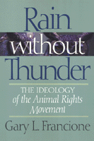

A powerful re-examination of the animal rights movement and its shortcomings
A powerful re-examination of the animal rights movement and its shortcomings


 A powerful re-examination of the animal rights movement and its shortcomings
A powerful re-examination of the animal rights movement and its shortcomings

|  |
Rain Without ThunderThe Ideology of the Animal Rights MovementGary L. Francionepaper EAN: 978-1-56639-461-1 (ISBN: 1-56639-461-9) |
"Francione cogently argues that the Animal Liberation Movement, though using rights rhetoric and espousing the eradication of animal exploitation, actually represents a new, self-defeating welfarism because its tactics embody the animal welfare position. Consequently, the plight of animals is worse than it was twenty years ago."
—Choice
Are "animal welfare" supporters indistinguishable from the animal exploiters they oppose? Do reformist measures reaffirm the underlying principles that make animal exploitation possible in the first place? In this provocative book, Gary L. Francione argues that the modern animal rights movement has become indistinguishable from a century-old concern with the welfare of animals that in no way prevents them from being exploited.
Francione maintains that advocating humane treatment of animals retains a sense of them as instrumental to human ends. When they are considered dispensable property, he says, they are left fundamentally without "rights." Until the seventies, Francione claims, this was the paradigm within which the Animal Rights Movement operated, as demonstrated by laws such as the Federal Humane Slaughter Act of 1958.
In this wide-ranging book, Francione takes the reader through the philosophical and intellectual debates surrounding animal welfare to make clear the difference between animal rights and animal welfare. Through case studies such as campaigns against animal shelters, animal laboratories, and the wearing of fur, Francione demonstrates the selectiveness and confusion inherent in reformist programs that target fur, for example, but leave wool and leather alone.
The solution to this dilemma, Francione argues, is not in a liberal position that espouses the humane treatment of animals, but in a more radical acceptance of the fundamental inalienability of animal rights.
Excerpt available at www.temple.edu/tempress
"[A] must-read for those teaching animal ethics and for any laboratory animal specialist wanting to obtain a deeper understanding of the Animal Rights Movement."
—Lab Animal
"Francione's book is a major contribution to the literature on applied ethical and jurisprudential theory, as well as an intriguing sociological analysis of a political movement. The context...is the current confusion within the animal movement over the distinction between animal 'rights' and animal 'welfare.' ...Francione argues that animal welfare has certain 'structural' defects and proposes an alternative theory of applied animal rights ethics [that] is creative, original, and provocative."
—Alan Watson, Ernest P. Rogers Professor of Law and Research Professor, University of Georgia, School of Law
"In the past decade, a number of progressive social movements have become increasingly moderate and even reactionary in their attempts to become more 'mainstream.' Francione's book brilliantly analyzes this phenomenon in a particular context—the animal rights movement.... [His] analysis is an articulate and insightful warning not only for those interested in animal rights but for those interested in understanding the current paralysis of other movements for social justice. This is an important book."
—Drucilla Cornell, Professor of Women's Studies and Law, Rutgers University
"Rain without Thunder is a must read for all those interested in the difficult but extremely important issues centering on how nonhuman animals are used and abused by human animals. Francione does not hesitate to take on the 'big names' on both sides of the fence [in] this bold and tightly argued book."
—Marc Bekoff, Professor of Biology, University of Colorado, Boulder and co-editor of Readings in Animal Cognition and An Encyclopedia of Animal Rights and Animal Welfare
"Gary Francione's work is both refined and exhaustively documented. [He] makes a strong case for viewing the animal rights position as both realistic and practical.... This is, in itself, a major contribution to the literature and one that will change the course of debate over animals."
—Michael Fox, Professor of Philosophy, Australian National University, Faculty of Arts
Acknowledgments
Introduction: Animal Rights and Animal Welfare
1. Animal Rights: The Rejection of Instrumentalism
2. The New Welfarists
3. The Philosophical and Historical Origins of New Welfarism
4. The Results of New Welfarism: The "Animal Confusion" Movement
5. The Empirical and Structural Defects of Animal Welfare Theory
6. Is Animal Rights a "Utopian" Theory?
7. Rights Theory: An Incremental Approach
Conclusion
Postscript: Marching Backwards
Notes
Index
 | Gary L. Francione is Professor of Law and Nicholas de B. Katzenbach Scholar of Law at Rutgers University Law School, Newark. He is the co-director of the Rutgers Animal Rights Law Center and the author of Animals, Property, and the Law(Temple). |
© 2015 Temple University. All Rights Reserved. This page: http://www.temple.edu/tempress/titles/1299_reg.html.